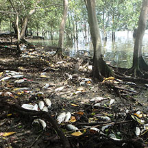

|
|
| seaweeds text index | photo index |
| Seaweeds in general |
| Red
tide and harmful algal blooms updated Dec 2019 What is red tide? Red tide is a situation where there is a large concentration of tiny harmful organisms in the sea such as microscopic, single-celled algae called dinoflagellates. The common name arose because the large number of tiny organisms colour the water. These colours range from green, brown and reddish orange to purple. The phenomenon is NOT related to the tides and is thus more correctly called an algal bloom. (Algal blooms can also occur in freshwater rivers, lakes and other water bodies. Red tide is a term applied to algal blooms in the sea). What causes an algae bloom? The causes are not clearly known and blooms cannot be easily predicted. In some cases, the blooms may be natural and related to nutrient upwelling or other seasonal changes in the ocean. In others, a bloom may be triggered by nutrient inflow into the sea. These may be due to coastal pollution from farmland or untreated sewage, or even seasonal winds that blow particles from the land into the sea. Changes in the sea temperature may also affect blooms. |
 Masses of dead fishes washing up. Lim Chu Kang, Jul 16 |
 Green mussels are among the animals that might concentrate toxins during a 'red tide' Changi, Jan 04 |
 Blood cockles are among our favourite seafood! Changi, Jul 02 |
| Are algae blooms dangerous? Not all algal blooms kill.
And some algae can kill without being concentrated enough to be visible.
A bloom can be dangerous because the tiny algae produce toxins. Filter-feeding
animals such as bivalves concentrate these toxins. The
toxins do not harm the bivalves, but can be fatal to humans and other
animals such as otters that eat the bivalves. The toxins are not destroyed
by cooking. Crabs and other marine creatures can also concentrate
these toxins. For some kinds of toxins, anecdotal evidence suggests that people who swim or inhale such toxins dispersed in the air may experience irritation of the eyes, nose, and throat, as well as coughing, wheezing, and shortness of breath. Additional evidence suggests that people with existing respiratory illness, such as asthma, may experience these symptoms more severely. People should also avoid going to the areas affected by the bloom. At other times, filter feeding sea animals may also concentrate other unpleasant chemicals and bacteria which could make us ill. |
| Photos of mass fish deaths on Singapore shores |
On wildsingapore
flickr
|
Links
|